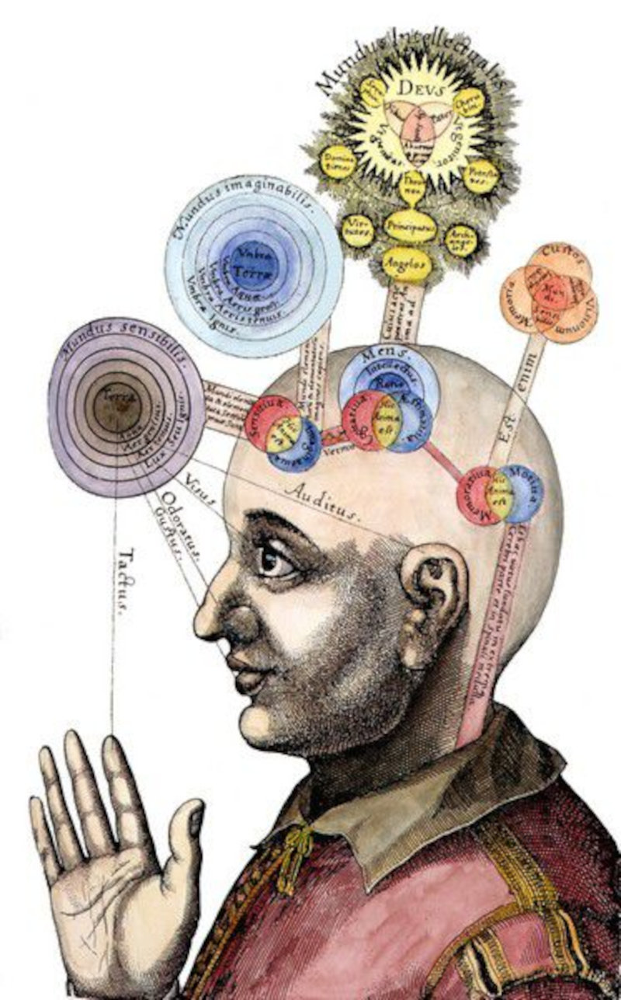
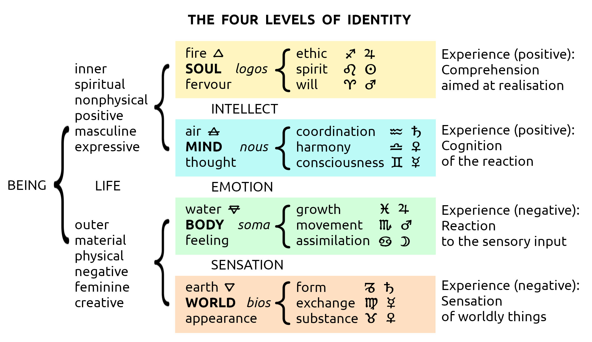
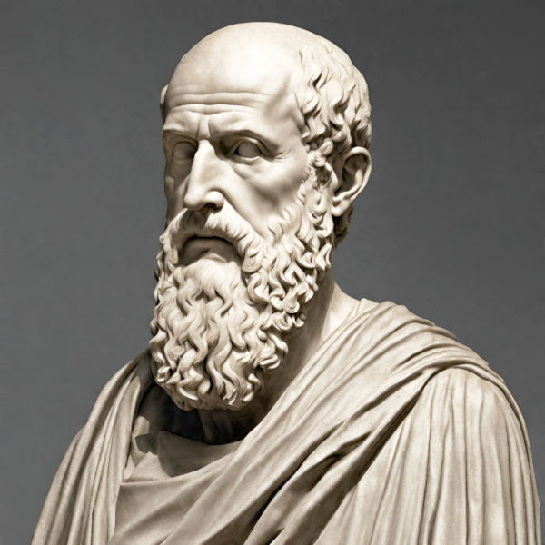

Four Levels of Identity in Hermetical Astrology

The Four Levels of Identity are
derived from the signs and their
elements.
Firstly, here are the signs in order
around the zodiac, with associated
element, polarity and ruler:
12. Pisces water -ve Jupiter
11. Aquarius air +ve Saturn
10. Capricorn earth -ve Saturn
9. Sagittarius fire +ve Jupiter
8. Scorpio water -ve Mars
7. Libra air +ve Venus
6. Virgo earth -ve Mercury
5. Leo fire +ve Sun
4. Cancer water -ve Moon
3. Gemini air +ve Mercury
2. Taurus earth -ve Venus
1. Aries fire +ve Mars
Then they are rearranged according
to elements in order of vibration,
i.e. fire, air, water, earth:
9. Sagittarius fire +ve Jupiter
5. Leo fire +ve Sun
1. Aries fire +ve Mars
11. Aquarius air +ve Saturn
7. Libra air +ve Venus
3. Gemini air +ve Mercury
12. Pisces water -ve Jupiter
8. Scorpio water -ve Mars
4. Cancer water -ve Moon
6. Virgo earth -ve Mercury
2. Taurus earth -ve Venus
10. Capricorn earth -ve Saturn
The rhythms of the cosmos flow eternally. Birth is the significant moment of becoming a separate entity and joining in on that flow. The place and time of birth denote the basis of personal identity underlying motivation for future actions. Astrological observation is a look at the sky from that place at that moment and represents cosmic identity. It not only describes the pull of the eternal flow of the universe's movements but also the inherent momentum. Life is a blend of being carried along by transient cosmic forces and the reshaping caused by our own utilisation of that personal momentum.
derived from the signs and their
elements.
Firstly, here are the signs in order
around the zodiac, with associated
element, polarity and ruler:
12. Pisces water -ve Jupiter
11. Aquarius air +ve Saturn
10. Capricorn earth -ve Saturn
9. Sagittarius fire +ve Jupiter
8. Scorpio water -ve Mars
7. Libra air +ve Venus
6. Virgo earth -ve Mercury
5. Leo fire +ve Sun
4. Cancer water -ve Moon
3. Gemini air +ve Mercury
2. Taurus earth -ve Venus
1. Aries fire +ve Mars
Then they are rearranged according
to elements in order of vibration,
i.e. fire, air, water, earth:
9. Sagittarius fire +ve Jupiter
5. Leo fire +ve Sun
1. Aries fire +ve Mars
11. Aquarius air +ve Saturn
7. Libra air +ve Venus
3. Gemini air +ve Mercury
12. Pisces water -ve Jupiter
8. Scorpio water -ve Mars
4. Cancer water -ve Moon
6. Virgo earth -ve Mercury
2. Taurus earth -ve Venus
10. Capricorn earth -ve Saturn
Identity creates the circumstances that facilitate development of characteristics recorded astrologically. Outward symbols are sought to represent inner conditions in the hope of self-realisation. If the symbols are not at hand imagination attempts to create them. When this is unsuccessful distress arises. Usually though, the attempts are modified and tried again.
Personal Alchemy
The techniques which will be presented here are firmly rooted in Hermetic philosophy and the manipulation of the cosmic elements, fire, air, water and earth. In a manner similar to the methods employed by alchemy, the personal identity may be treated through these substances in such a way as to make them capable of alteration. In that light, it is simply a matter of aligning the elements to the identity which we shall do.Experience of Reality
Reality is a multi-layered experience with both objective and subjective elements. Objective reality, although experienced subjectively is accepted as consisting of real objects in the outside world that are seemingly uniformly experienced by the majority. On the other hand, subjective reality is a conditional experience that relies on personal sensory perception, reaction, cognition and comprehension. These four experiences are the result of the realities of the world, the body, the mind and the soul.Subjective reality is a combination of phenomena that occur on the sensory, emotional, mental and spiritual levels. Observation of the outside world is much easier than that of the inside world. To function in the outer world there is no reason to know the inner. Each human is capable of functioning on an unconscious animalistic level without a need for self-knowledge. Nevertheless, some people have an urge to discover personal identity which occurs for no other reason than by wilful desire of the soul.
Observation of the outer world offers knowledge of the inner through inference. This relies on the notion that perception parallels identity and that observation of the world is only possible through analogy to the self. What is observed is being seen for a reason. Where observation encompasses more than the fundamental needs for survival, excess information must relate to something more than the basic functioning of the body. It is seemingly superfluous information that may be related to personal identity.
Throughout history the excess of information being received by the human mind has received a multitude of treatments as well as a multitude of possible meanings about what it might be. Generally though, the usual means of dealing with the seemingly endless variety is to nominate similarities between isolated items so that manageable groups may be formed in order to denote relationships. The categorisation and classification is the basis of symbolism.
The body is the medium through which the mind can perceive the world with the physical senses. But the senses are not directly apprehended by the mind, they are only available through the intermediary emotional reaction. Emotional reaction in the body may be realised by the mind as being the same as that of another person's observation of the individual's body as an object in the other's world. Therefore, since the other person can't see into the can't see into the mind or soul of the individual being observed, since only the individual experiences them, the other person only has a view of the identity of the individual through the impression created by the body as an object and the body's actions and reactions - the emotional state.
Four Levels of Identity
The Four Levels and Three Modes of Identity are specifically derived from the seven planets and twelve signs in a hierarchical manner ascending through their elements and polarity. In the personal chart they reveal detailed unique characteristics of the native. In the Hermetic Cosmos, everything is made out of the four cosmic elements of fire, air, water and earth.

Four Levels
of Identity
SOUL
MIND
BODY
WORLD
The Four Levels of Identity
in Neoplatonism

Plotinus, founder of Neoplatonism
The study of the levels of identity was maintained by the philosopher Plotinus in his system of Neoplatonism. For Plotinus and his follower Porphyry, the emanations are as follows:
To Hen (τό ἕν), The One: Deity without quality, sometimes called The Good.
Nous (Νοῦς), Mind: The Universal consciousness, from which proceeds
Psychē (Ψυχή), Soul: Including both individual and world soul, leading finally to
Physis (Φύσις), Nature.
It's Just a Phase You're Going Through
This section is issue-oriented to outline the topics of concern arising from the » cycles and their phases. They range from small degree and small issue to large degree and large issue. The areas under examination tend to be rather negative with the negativity increasing by degree. The reason for this is that by fabricating an issue, an individual wishing to see on the outside what is happening inside, in the mind, is virtually negating the existence of its presence in the mind. The phase subject has not yet become part of the personality.Nevertheless the propensity is there. Learning to manage it might be possible through observation, so its image is superimposed upon the environment. The resultant picture of reality, being received, is a careful selection of material pertinent to the topic of the phase that will accommodate the desirable symbol for processing. The individual only sees a selected part of the information that is available and manipulates this into subjective reality.
Everyone has an effect on the immediate environment. The manipulation creates issues. This is achieved by application of the free will of the person. Refusal to realise responsibility for it is fatalism. A secondary reason for projection of an issue outwards onto the environment is reluctance to manage the subject at all. A fatalistic view of the situation declares the problem to be separate and independent from the person experiencing it.
The information contained by a phase can be external or internal. If a phase related issue occurs, the information becomes apparent as external circumstance. This means that the person with the phase is seeking an outside symbol for focussing the matter in mind. In such a case the external stimulus is challenging the phase's subject. There is a lesson to be learnt so that future occurrences of the issue may be handled automatically without the need for conscious consideration. The person involved in issues has a range of defensive reactions when confronted by them - ‘It's not a problem!’ - ‘That's not my problem!’ - ‘I don't know what to do!’ - ‘It's not my fault!’ - and is generally attempting to negate or play down the importance.
True, the situation is a real one with circumstances existing as physical realities, and the person might very well not be the cause of the predicament. But the astrological truth behind the matter is that issues are the externalised physical manifestations of personal identity. An astrologer can anticipate the events. The person is ultimately the instigator of them.
If the issue holder's mind is led back to the start of the chain of events, to the time when it couldn't have been a problem, a discovery will be made that a decision was taken, albeit relatively unconsciously, to take up the challenge being presented. At the very start there was a time when the person had the choice of free will to become involved or not. Nothing forced the decision other than the person's own sub-conscious. Even if it is argued that there was external force, this only resulted from sub-conscious manipulation of the external factors.
Strangely, there can be enough foresight to become attracted to people, places and events to see the possibility of a potential representation of identity revealing itself. Yet there is always an accompanying lack of anticipation of the escalation of events into unmanageable proportions. This is immaturity. The reason for this is a lack of consciousness of the motivation for moving into potentially disastrous situations. Consciously, all sorts of rational arguments are built up to continue in the face of adversity but these originate in the sub-conscious part of the mind. These motivations are synonomous with the reference planets in cycles as the motivators for greater realisation of the Self.
Humans are by definition capable of moving themselves, that is, they are the cause for their own movement. When a situation changes, there must have been movement away from the old and towards the new. The cause of the person's change of circumstances must be personal. Of course, there is a rather special case of manipulation of circumstance in the manoeuvres performed in the case of a relationship. Each party may believe that the reason they were brought together was caused by the other person. After all, the most important thing that can affect one person is another. But even if someone feels dragged into the partner's life to solve impersonal issues, there necessarily must have been complementary personal issues from the start. Unwittingly, people mistake the potential for mutual issue involvement as love, since Venus is the goddess of love as well as the ruler of relationship issues. When this mistake is made, the conscious loving intention inevitably develops into calamitous consequences.
The understanding that comes from dealing effectively with repetitive issues strengthens the spirit and leads to wisdom. When lessons are learnt, management is achieved and the topic of the phase becomes part of the personality and internalised. The only way of realising such an achievement is when previously difficult situations are no longer looked upon as trial and tribulation. This is accompanied by a feeling of maturity and an outward expression of calm confidence - ‘Oh yes, I know what you mean. I used to be like that but I have since found a way of dealing with the situation, in fact it's now quite different.’
The negativity that was prevailing during involvement in issues which inverted the planetary functions turns into positivity and appropriate expressions. What was outside becomes inside and vice versa. The circumstances that represented the cause become integrated into the personality. The planetary principle represented by the reference planet is finally understood. The person realises an ability to move the Self and no longer to expect external circumstances to be the motivation by demand.
Consequently the feeling that was being imposed upon the person experiencing the issue becomes externalised, thrown off the person. This feeling was a functional reaction to the externalised representation of the identity. Since the principle of the reference planet was seen to be on the outside, the person assumed the role of the other planet of the cycle. By symbolising the phase-maker, the person takes on the characteristics of that planet as if under the influence of the reference which was already seen outside.
When an issue is solved, a lesson is learnt and the person becomes like the reference planet, so that the phase-maker symbolism is wilfully made an external event. The result is that the person is now moving relatively slower than the environment. This leads to calmness and confidence about the ability to be like that planet's positive principle. This confidence is felt, not shown. A person showing confidence is manifesting it externally as personal image and the surrounding situation is negative, The person is not altering it. True confidence is like the reference planet and manifests impersonal external positive effects.
Planetary Negativity
The effect of a cycle is the issue that arises around the principle of the phase-making planet. There may well be forty-five different cycles all forming phase issues but there are still only ten planets and ten corresponding planetary principles urging self-discovery. The bottom line of Phase Astrology is the fullest realisation of planetary potential that is available from the sign in which a planet is situated. Until a planet's principle is positively understood, a negative version persists which provides the facility for recognizing outside symbols as a reflection of the Self. One reason for gravitating towards negativity is to experience something more negative than yourself. It makes you feel more positive without necessarily being it. When negativity is seen to grow without personal relief, accusations are made. An accusation declares that the negativity that was attractive at first has since escalated to more than what was wanted without being helpful.The manifestation of issues in the material world necessarily occurs in the physical realm of the elements. The element of the sign in which a planet is positioned will also be negated by the negativity of the person perceiving the manifested situation. Self-realisation may be achieved through carefully studying situations, attitudes, feelings and behaviour. When viewed as contributing factors to the atmosphere of an issue, they imply information regarding the cause. This may be employed to modify intentions. The procedure involves looking at four sequential stages.
STAGE ONE STAGE TWO STAGE THREE STAGE FOUR Situation Behaviour Understanding Experience Negative Negative Positive Positive Cause Effect Cause Effect Reference Phase-maker Reference Phase-maker
Stage One - The Current Predicament
The way this is used is by directing the study towards the prevailing conditions surrounding a person. This will point to the planet in the natal chart which is the reference to a cycle and is the cause of concern and hence the cause of the conditions. This is what confronts the person - what is seen, what is heard - as a problem. This can be described by the elemental and planetary nature of the situation.Element Substance of Situation
For instance, using table 15.a, if someone is experiencing coldness, whether it be from a person or a place, there is a lack of warmth which would normally come from fire so the planet in question will be found in a fire sign.Maybe there is a problem of not being able to get something in particular. This is an issue of deprivation as a negation of the solidity usually expected from the earth element and in such a case the planet in question will be in an earth sign.
If the person is having difficulty from a lack of freedom or freshness, unable to move or to breathe, can't get enough air, then the planet is in an air sign.
Lastly, when the complaint is about a blockage and that things just don't flow like they should, the element of water is being seen in a negative situation and the planet causing this is in a water sign.
Phase Issue of Situation
Once an element has been discovered as the substance of the matter, the planet causing the conditions is the reference planet. The field in which the surrounding issue occurs is the phase. The planet in the discovered element is the reference in a cycle and has a phase being made to it by another planet which will show its effect in the person.The twelve possible phases are covered in the next chapter but we will see here how they fit into the overall picture. What is done is to find a cycle in the Phase Frequency chart that illustrates the field of the issue and involves the planet already considered as the cause. This planet must be the reference in the cycle.
Example of Stage One
Let's look at a real situation that shows in the example diagrams we've already been using. Say for instance the person is in a situation that feels suffocating. The situation is happening in a relationship issue. ‘When we met, she took my breath away.......but now I can't breathe when I'm around her’. The partner is stifling the person. We can assume that the planet causing the problem is in an air sign (can't breathe) and is the reference of a cycle that involves phase seven (relationship).We now look to the Phase Frequency chart, diagram 13.c, to find a cycle that has a planet in an air sign in the phase seven column and is a reference to another planet. This planet is found to be Mercury in Aquarius as the reference to the Moon which makes phase seven to it.
The cycle that represents the issue is ‘MoMe’, Moon Mercury. The cause of the situation is a lack of ideas from the principle of Mercury and a lack of ability to be Mercurial which would show up most obviously in the relationship issue as a lack of communication. There is not enough interchange of ideas. This is being put upon the partner by unconscious manipulation of circumstances. The result is that the partner who was seen originally to have the propensity to ‘take the breath away’, is now stifling very necessary communication.
Stage Two - The Reaction in Behaviour
In turn, we may look at how the person reacts to the current situation. Because the reference planet has been externalised, the phase-maker may now be seen to represent the person. The symbolism of the phase-maker of the cycle is effectively adopted as a behavioural reaction to the externalised cause, the current predicament. This is seen by other people as much as by the individual personally as an aberration from ordinary normal behaviour.Planetary Negativty
The aberration shows itself as distress. The person feels subjected to the situation which is beyond personal control. Therefore the list shown in table 15.b is a range of negative human emotions corresponding to the negative principles of planets subjected to the same pressure.Elemental Negativty
The planet representing the distress is in a particular sign in the natal chart and the element of that sign will manifest itself as surrounding the personal expression. The person will put out that feeling negatively. The reason for this negation is that the person is wanting to use that expression to cancel the situation, to negate it, to stop it.If the phase-maker is in a fire sign the person will appear cold, lacking warmth. Fire signs normally are enthusiastic but when the situation is something that's not liked this will be inverted, reversed, negated. There is a disinterest in everything going on around.
When in an earth sign, the phase-making planet will have its principle shown through a need to run away. The negativity here is a reversal of the practicality and involvement of the earth signs which turn outwards as aversion to the situation.
An air sign is normally associated with hospitality and communicativeness, thoughtful and mindful. If this is inverted the person shows hostility through a defensive stance of a perception of non-reciprocating conditions.
Usually water signs are able to go with the flow. In times of distress a watery planet will show a negative side by negating the nature of the element. This shows as hardness and inflexibility because the person feels that any positive flow would only encourage the situation.
Example of Stage Two
As we have seen in the example of stage one, the Moon is the phase-maker. We would expect the effect of the externalised Mercurial factors of the cycle to pressurise the Moon, challenging perception. The Moon in the natal chart is in the earth sign of Virgo. Looking at table 15.b to check the effect we discover that it should show in the person's behaviour as an irrational (Moon) need to run away (earth). Indeed, the person did run away and now feels that this reaction was very irrational.The intention of these tables is to assist in revealing which planet, as reference in a cycle, is causing distress and which planet, as phase-maker, describes the distress. If there are complexities arising through multiple causes of intertwined and confused conditions, the various planets involved must all be discovered.
Warning Regarding Negation of Negativity
A major problem occurs when a person realises negativity and tries to do something about it. This realisation, which is actually encouraged by modern counselling methods, creates a feeling of guilt which then operates as a driving force to consciously cancel anticipated negativity resulting only in suppression. This negation of negativity is not a solution.
REFERENCE ELEMENT MANIFESTED NEGATIVE EXPERIENCE
Fire coldness, can't get warm
Earth deprivation, can't get something
Air suffocation, can't breathe
Water blockage, can't get flow
REFERENCE AS CAUSE EXTERNALISED NEGATIVE SITUATION
Pluto upheaval, turgidity, eruption
Neptune blur, confusion, surge, storm
Uranus disaster, unexpectedness, shock
Saturn oppression, control
Jupiter futility, extravagance
Mars danger, violence, injury
Sun darkness, gloominess, meanness
Venus ugliness, discomfort, lack
Mercury stupidity, disinterest, deception
PHASE-MAKER'S ELEMENT MANIFESTED NEGATIVE REACTION
Fire cold, disinterested, defeated
Earth averse, wanting to run away
Air hostile, defensive, fighting
Water hard, inflexible, resisting
PHASE-MAKER AS EFFECT INTERNALISED NEGATIVE BEHAVIOUR
Neptune vague, obscure
Uranus crazy, alien
Saturn depressed, frustrated
Jupiter pessimistic
Mars afraid, fearful
Sun weak, drained, lethargic
Venus desperate, lonely
Mercury nervous
Moon irrational
Stage Three - Becoming Positive
All this must be leading somewhere. The immediate thought that arises is that if all this negativity is abounding and is uncomfortable, what could be done to get to positivity?One of the major problems that human societies present to individuals is a general denial of individuality in preference to collectivity. Societies don't present examples of positive expressions of planetary principles to individuals. Some individual negative expressions are dangerous to society so the general attitude is to suppress, denigrate or alienate individuality and avoid the possibility of deviant behaviour. Often, this is a good reaction which protects individuals that might come under attack from undesirables but in the wake of fright against this negative form of individuality the positive is usually scared off. As well as this the overwhelming negativity predominates in all individuals and is not much of an incentive to be positive. Where can a positive person fit in to a negative world? Of course, the author's own feeling of futility (table 15.a - Jupiter) becomes an issue here but the phases help by revealing a guiding light.
Firstly, all negative expression can ultimately be turned into positive expression. Distress about negative situations can only occur when the person experiencing the distress already knows, deep down, what could be happening instead, that is, if the situation were positive.
This raises a problem in itself because until distress is experienced there is no consciousness of the situation. Distress occurs in the mind as the conscious realisation of emotions that can't be suppressed. People can coast along through unconscious waves of activity juggling situations, manipulating and manoeuvring in anticipation of stumbling on a miraculous turn of events that suddenly reveals all. If this gets out of hand, usually by going on for too long and allowing things to get bigger as time goes by, any problems that previously could be ignored and kept in the sub-conscious overflow or erupt into consciousness. This is the distress. If steps are taken to prevent this from happening, the overflow will be shown as physical strain or stress which is not necessarily conscious. Stress is a condition of the body whereas distress is a condition of the mind. Either can occur when the perceived reality is greater than the desired reality.
The mistake is not in the current situation. It was made at the start. When someone feels negativity coming on, the urge to become positive brings on a denial of the negative reaction and then a reversal of what the urge really is. This leads eventually to suppression of the natural emotional reaction which leads to distress when it can't be suppressed any longer. Distress indicates that more information is coming from the situation than can be handled. If the distress is treated so that the situation can continue then even more stimulus will occur. Actions taken to manage the current situation will only result in making the situation's conditions bigger than before. Once distress occurs it has already grown out of hand and is showing signs of unmanageability. An attempt to handle a crisis will only confuse the matter by compounding it with more issues.
The experience of distress is a signal that there is already enough material to process to extract meaning. Even if the information is negative the symbolic meaning may still be deduced. Instead of continuing with a pointless escalation, a means of re-applying the initiating action must be sought and acted upon. The inappropriate assumption made at the beginning formed the basis for the predicament. The intention must be discovered and fully understood, consciously, so that a conscious application of the principle may be realised. The required response is to internalise the reference by discovering the expectation. This is revealed through the element of the phase-maker which has been assumed as the attitude of the person now subjected to what has grown to be out of hand. The phase-maker has become the negative personal reaction but was originally expected to be the positive impersonal experience.
If the reaction was showing as coldness and disinterest, then the element of the phase-maker was fire. The person had expected to find warmth and enthusiasm from the situation.
If the reaction was to want to run away, then the element was earth so material comfort and practical participation was being sought.
If the reaction was hostility and defensiveness, then the element was air. A hospitable airy intellectual interchange was expected through meaningful communication.
If the reaction was showing outwardly on the person as hardness and inflexibility, then the element was water. Emotional involvement and the need for the elemental flow represented by water was expected to have its source in the situation.
Distress and discomfort are the signs of consciousness. Unless and until this happens, Stage Three can't occur. There must be an emergency that requires self-discovery. Without a challenge, the opportunity for growth doesn't present itself. When there is prior knowledge of possibilities, there can be very careful consideration of the issues needed to reveal identity and realistic helpful situations sought. The growth available from each issue might not be felt to be as big as the issue which led to it but that is because the distress amplified the proportion. It may be appreciated that there are many possible avenues to take to get to the same place. By stumbling in the dark, the most dangerous path is most likely taken. By using the information available from astrology, light is thrown onto the path and the goal. Astrology can reveal motivation as well as aim.
Example of Stage Three
By looking at table 15.c we can find what the person in our example has been up to in the relationship. What was expected was security (Moon as phase-maker) and what was being sought was understanding (Mercury as reference). There was an urge coming from Mercury to assimilate ideas and be able to use knowledge to be more thoughtful (air sign) to be secure. Obviously the relationship didn't supply the ideas although it was based on the assumption that it would. The partner was originally seen to be attractive for conversational appeal. When conversation failed, distress arose. The relationship eventually became a negation of the situation by being the complement of the lack of ideas. Unfortunately, immature judgment assumed the wrong conclusion from the given information that was being offered at the start. Since a partner can't be forced to generate more ideas, the only possibility for self-realisation that can come from such a predicament is to look outside the relationship for the desired interchange. In future, with a realisation of the motivation, knowledge may be sought from a more appropriate source.For instance, books are not bad. They have been presenting information to people for a long time. What this person would require is a book written by an author who takes into consideration the reader. The person can feel a relationship (phase seven) with the author to facilitate the transfer of information through that medium. Alternatively, a walking encyclopedia is just as good because otherwise this person will necessarily become irrational about the relationship with the person who holds the information if the information is not forthcoming.
Well applied motivation leads to successful issues.
Stage Four - The Positive Experience
When a positive attitude has been established, the principle of the reference planet is assimilated into the personality as a calm and confident realisation. The signal that this has been achieved is the positive change of conditions for the person. Basically, the actuality of the world remains the same but the positive view sees more positive things. Referring to table 15.d the new circumstances are manifested once again in the elements. This time the appropriate qualities of the elements are perceived.A phase-maker in a fire sign will allow the environment to be seen as supplying light and warmth. The activation of the fiery spirit in the person parallels a perception of enthusiasm and fervour around and about.
The effect of a phase-making planet in an earth sign is obvious by the availability of materials for application associated with the element of earth. The concept of having a firm footing, a basis for exercising earthy practicality, will abound, encouraging involvement.
When air surrounds the situation positively there is a perception of the free movement of ideas, the intellect of the element of air. This is uplifting and refreshing.
Finally, as the last element in the list, water supplies a replenishment to the senses, flourishing and flowing.
A positive experience is manifested positivity.
Example of Stage Four
Assuming that the person in our example has met up with a meaningful relationship and assimilated ideas through phase seven of the Moon Mercury cycle, the reference has become part of the personality. The new experience that will ensue will show in the principle of the Moon. This is externalised in the world as practicality (earth element) providing security (Moon).
REFERENCE ELEMENT MANIFESTED POSITIVE EXPRESSION
Fire enthusiastic
Earth realistic
Air thoughtful
Water flexible
About
Hi, my name is Rod Schneider and I have created this website to illustrate how, with the help of astrology, that negativity can be converted into something more positive. The astrology being shown here is rooted in the most ancient inceptions derived from Hermetism. It is technical but in the hands of a practioner already familiar with astrology has great potential to be helpful. There is also much help for non-astrologers to use astrology in a different manner, namely with cycles and phases.Comments and contributions are always welcome.
Contact: rodschneider35@gmail.com